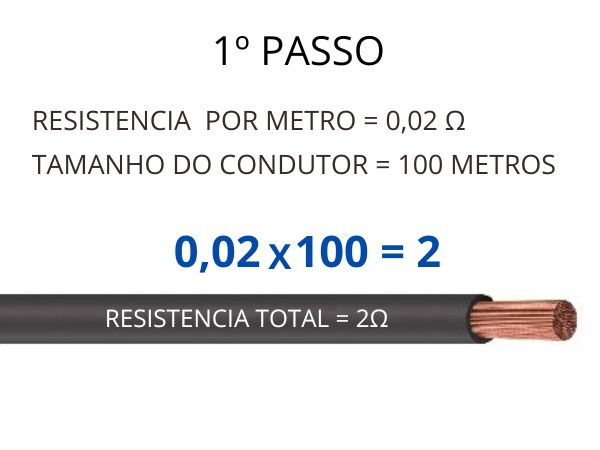
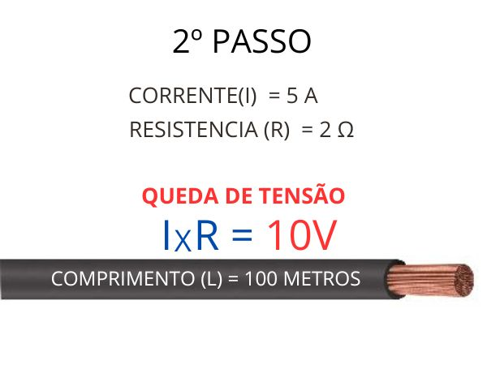

Queda de Tensão
O que é queda de tensão?
A queda de tensão refere-se à diminuição da voltagem elétrica ao longo de um condutor através do qual a corrente está fluindo. Isso ocorre devido à resistência do condutor, que converte parte da energia elétrica em calor. A queda de tensão é um fenômeno importante a ser considerado em circuitos elétricos, pois pode afetar o desempenho dos equipamentos e a eficiência do sistema.
Causas da Queda de Tensão
Resistência do Condutor: Condutores com maior resistência causam maior queda de tensão.
Distância: Quanto maior a distância que a corrente precisa percorrer, maior será a queda de tensão.
Corrente: Correntes mais altas causam quedas de tensão maiores, dado que a queda de tensão é proporcional à corrente de acordo com a lei de Ohm (V = IR).
Fórmulas para Calcular a Queda de Tensão
Para calcular a queda de tensão, precisamos de algumas informações básicas: corrente (I), resistência do condutor (R), e a distância do condutor (L).
Vamos usar um exemplo específico:
1º Passo: Multiplicar o valor da resistencia de 1 metro do condutor por seu comprimento total.
2º Passo: Multiplicar o valor da resistencia do condutor pela corrente que vai percorrer por ele.
Observação: O valor da corrente vai depender do equipamento(s) que estão conectados ao circuito em que os condutores pertencem
Para facilitar, criamos uma area de interação simulando uma instalação elétrica comum com condutor de cobre. Imagine um ponto de tomada no qual um equipamento será ligado. Informe a seção do condutor mm2, comprimento, tensão(V) e por fim a potencia(W) do equipamento ligado a tomada. Como resultado teremos a tensão sobre o condutor e sobre o equipamento